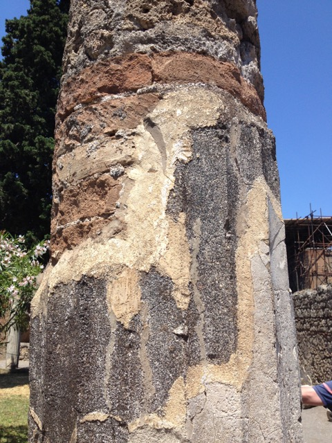
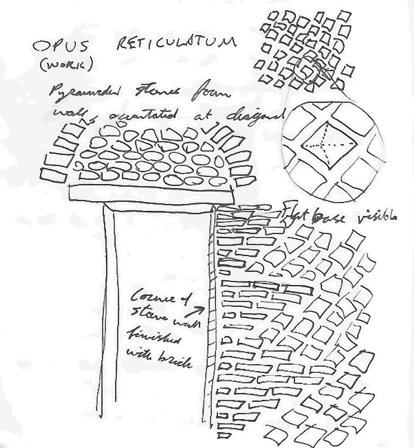
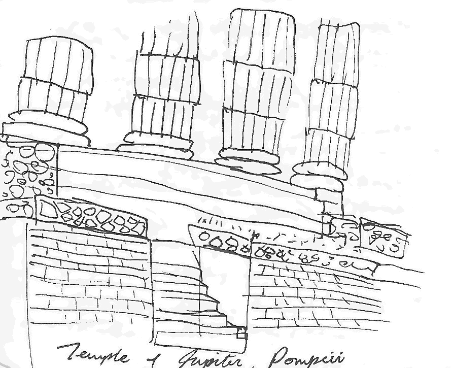

The forum of Pompeii, with Mount Vesuvius in the background.
The ancient Latin name of the city of Pompeii is Colonia Cornelia Veneria Pompeianorum. The formal name indicates that Pompeii is a colony that was taken control of by general Cornelius Sulla, and that the deity of the city was Venus. This name was officially given to the city after it was conquered by Rome in the Social Wars.
A Macellum, or food market. Remains of pilasters can be seen, which would raise a platform to help keep fish fresh.
Statue of a faun, the namesake of a well-preserved domus called The House of the Faun.

Layers of a column can be seen, revealing how brick was used for structure and then covered with different types of concrete.
House of Mysteries
The first Italian villa we visited was the House of Mysteries, just outside the city center. The villa is famous for its frescoes in the architectural style and is named after one of its frescoes depicting a mysterious ritual that might be in preparation for marriage. The villa is an example of a villa urbana, being located within easy walking distance from the city.
The House of Mysteries
Impluvium in a couryard of the House of Mysteries. Roman houses would often use an impluvium to drain rainwater into a cistern.
Architectural fresco depicting a closed door.
Architectural fresco depicting an arch and columns in false perspective.
Left wall of the mystery fresco.
Back wall of the mystery fresco.
Stabian Baths
Public baths were an important feature of any Roman city, and Pompeii is no exception. Pompeii's Stabian Baths are famous for having separate baths for men and women, while other baths would have shared the same facilities for both men and women. Different stages of water temperature were experimented with, eventually arriving at the convention of hot first, warm second, and cold last. The names for these baths are the Caldarium, Tepidarium, and Frigidarium respectively. In addition to washing oneself, visitors to the baths could also exercise in the Palaestrum that was part of the bath complex.
The warm and hot baths would be heated using a hypocaust system: floors were raised and the air underneath was heated.
One of the rooms in the women's area of the baths.
Basilicas and Layered Spaces
The last day of COA 3114 we talked some about layered spaces at the temple of Athena in Paestum and how there was a gradual transition from full sunlight to filtered sunlight to darkness over a series of six spaces. At Pompeii the next day, we talked about layered spaces again at the Basilica of Pompeii. This layered space was organized almost inversely from the temple of Athena. The Temple has columns on the exterior to create a space inside less exposed to the elements, while the Basilica has columns on the interior in the round to create a slightly more private space around the open central space.
The Basilica at Pompeii. The interior of a Basilica is an example of a layered space. Basilicas were historically always tied to public spaces.
A guitar contert in Sorrento at Chisea di San Francesco. The courtyard the concert was held in has a screen of columns in the round, screening sounds similar to how the columns in a Basilica were designed to do.
While we were at the Basilica, Heather read from Vitruvius explaining how the columns around the interior of the main chamber provided a screen so that business could be carried out without disturbing what was going on in the main court. I didn't fully understand this effect until saturday night, when several of us attended a guitar concert in the courtyard of a nearby church, Chiesa di San Francesco. All the music was acoustic, with no additional amplification, so it was especially important that the audience was quiet so that the music could be heard. I arrived late after the concert had already started, and walking to the courtyard couldn't hear any music at all. Once I reached the walkway behind the columns screening the courtyard, I could hear the music well enough, but was distracted by sounds from the street and from other people entering the courtyard. After a few songs however, a few people decided to leave and there were seats available in the middle of the courtyard. Inside the screen of columns, the quiet distractions that I had been noticing were all but eliminated without me even consciously noticing at first. I believe that the visual filtering out of the activities behind the columns also helped to focus on the activities in the center of the courtyard and enhanced my experience. Regardless, the concert was an amazing experience that was enhanced by the architecture in a way I would not have noticed before.
The Odeon, or Small Theater.
Revetment, stones used as veneers to finish rough surfaces. The word Revetment comes from the Latin for "clothing".
Wall backing the stage platform for the Odeon. These walls would most likely have been covered in revetment.

Sketch of the back wall of the Odeon constructed in opus reticulatum, illustrating the pyramidal structure of the stones used for this technique.
The amphitheater of Pompeii. This is the earliest known amphitheater in Roman history.
Roman Temples
Having seen only Greek temples and no Roman temples for the first two weeks of the trip made the differences between Greek and Roman temples stand out more than they might have otherwise. The first Roman temples we saw were the temple of Apollo and the Capitolium in Pompeii. The first thing that I noticed was different was that there was no peristyle around the temple. Two of the only temples we saw in Greece without a peristyle were the Erechtheion, which already has an unusual layout compared to other Greek temples, and the temple of Nike, a small temple that we were unable to visit up close. Both of these temples are located at the Athenian Acropolis. Another feature that stood out was the brick that the temple was made out of instead of large blocks of stone. Also, the high base of the temple makes it stand above visitors in a way that most of the Greek temples we visited do not, although this is more prominent in Etruscan temples than in Roman temples. Dimensionally, most of the Greek temples we visited tended to be longer than they are wide, while Roman temples tended to be shallow but taller.
Tourists admire the Capitolium of Pompeii

Sketch of the Capitolium of Pompeii.
One of the most amazing things about Pompeii specifically is the fact that plaster casts can be used to recreate the root systems of decomposed plants that were preserved after the volcano's eruption. This is significant because it provides a primary source of what kinds of plants were native to the area in addition to what plants from exotic regions might have been imported for ornament. Of course, plaster casts were also used to create 3d models of the cavities left in the lava by the people and occasionally animals who did not escape the catastrophe of the eruption of Mount Vesuvius, leaving images that are very emotional to look at.
Plaster casts of the victims of Mount Vesuvius on display.